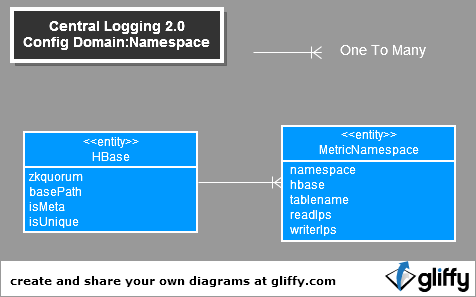
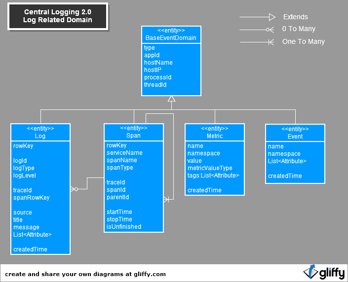
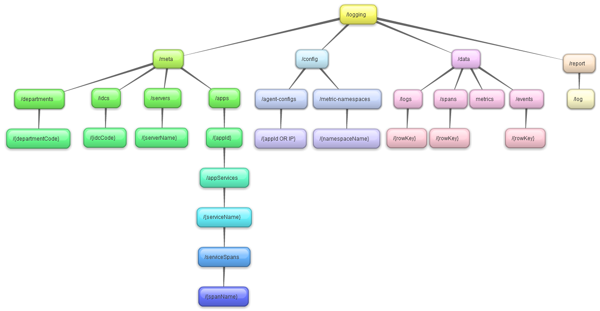
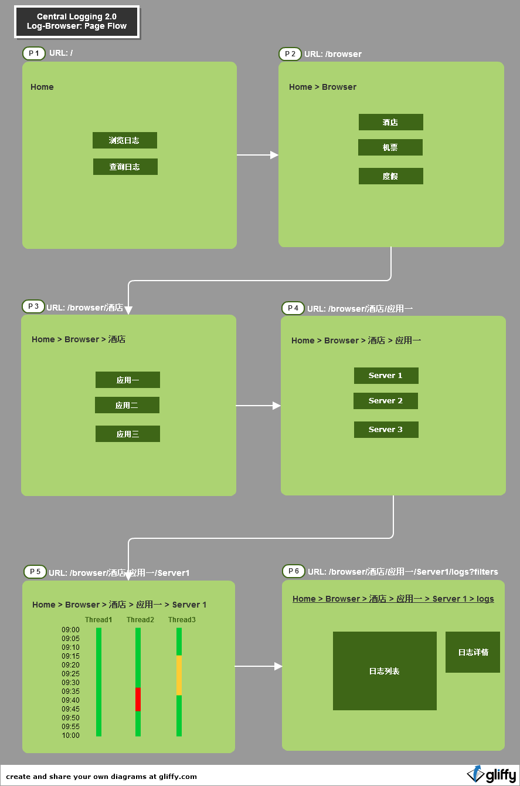
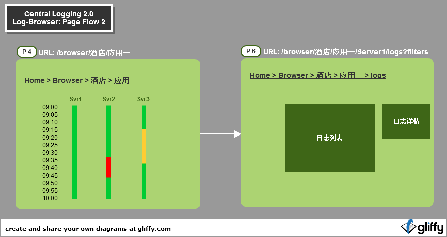
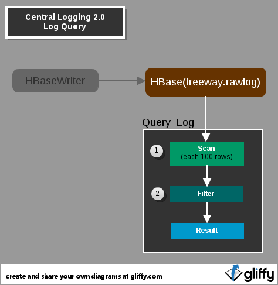
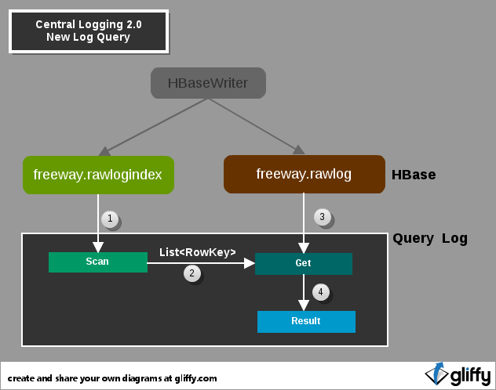

Logging 2.0上线，公司内越来越多的应用接入，各应用部门对及时快速准确获得相应日志的需求越来越高，也越来越多样化。 目前我们已经提供了日志查询的应用LogView和日志转存功能。但还不能真正满足用户的需求。
为了提供给用户更好的服务与用户体验，现开启了这个新项目LogBrowser，提供给用户以直觉导航浏览式的方式查看日志。
当前Logging2.0自身的应用，数量已超过6个，主要有LogView TraceView，而且全都基于开源项目，架构也不统一，难以扩展与维护, 浪费了大量的人力资源，而且不能带来令人满意的回报。 接下来的目标就是将这些应用慢慢整合，最终合并成两个应用，一个用于提供数据的RestfulApi, 一个用于提供Web界面操作的LogBrowser. 接下来以这个项目为契机，开启这种进化。
Logging2.0当前后端的HBase设计也存在一定的问题，在查询速度与并发访问下表现并不能使人满意，存在大量浪费带宽的行为。 在此次项目开发中，也会使用新方案，改善这种情况。
总体架构如上，分为三种角色: *数据源 * 、 Restful Api接口 、 web应用
数据源分为两种，HBase和MySql.
HBase:
MySql:
logging/apps 获取所有的app列表
logging/config/agent-configs 获取agent的日志配置
logging/data/logs?app=110101&startDate=2013-01-01 18:00:00 获取某个app指定时间段的日志数据
当前Central-Logging 2.0的组成：

Central-Logging 2.0中Log-Browser相关的将划分为三个子项目，挂在Central-Logging 2.0下面。
com.ctrip.freeway.domain
com.ctrip.framework.freeway.rest
com.ctrip.framework.freeway.web
Central Logging 2.0中的数据模型分为四类:meta data(*元数据 *), configration data(配置数据), log data(日志数据: log metric span event), report data(统计报表数据). 这些领域模型对应的Java Bean在项目central-loggging-domain里定义

元数据的领域模型主要是以App为核心展开的：
总结: 一个部门下可以有多个应用;一个应用可以有多台服务器;一个应用可以多个服务;一个服务可以有多个方法
Department:
| 属性 | 类型 | 说明 |
|---|---|---|
| name | String | 部门名称 |
| description | String | 部门描述 |
App:
| 属性 | 类型 | 说明 |
|---|---|---|
| appId | String | 公司分配给这个应用的一个应用号，通常为6位数字 |
| name | String | 应用名称 |
| description | String | 应用描述 |
| appServers | List<AppServer> | 应用拥有的服务器列表 |
| appServices | List<AppService> | 应用中被trace的服务列表 |
AppServer:
| 属性 | 类型 | 说明 |
|---|---|---|
| hostName | String | 服务器的hostName |
| ip | String | 服务器的ip |
AppService:
| 属性 | 类型 | 说明 |
|---|---|---|
| name | String | service名称 |
| serviceSpans | List<ServiceSpan> | 服务所拥有的方法列表 |
ServiceSpan:
| 属性 | 类型 | 说明 |
|---|---|---|
| name | String | 方法名称 |
无数数据的来源分为两种：
配置数据分为两类，一类是对Agent的配置信息，一类是对Metric Namespace的配置信息。
由类AgentConfig表示

AgentConfig:
| 属性 | 类型 | 说明 |
|---|---|---|
| key | String | 指定的一个Key,将确定对谁生效。通常为一个appId或server ip, 特殊key:"global",代表agent的默认配置 |
| appLogEnabled | boolean | 表明是否开启日志 |
| traceEnabled | boolean | 表明是否开启trace |
| metricEnabled | boolean | 表明是否开启metrics |
| appLogLevel | LogLevel | 日志级别，前提需要开启appLogEnabled |
| traceLogLevel | LogLevel | trace中的日志级别，前提需要开启traceLogEnabled |
| flushPeriod | int | 毫秒，agent中打包chunk的频率 |
| maxMessageSize | int | KB，一条 log中message的最大size |
| urlLogSampleRate | double | url trace的采样率 |
目前只有metrics使用namespace, namespace决定了读写权限，和使用的hbase实例和table名称。

HBase:
| 属性 | 类型 | 说明 |
|---|---|---|
| zkquorum | String | Zookeeper 结点列表 |
| basePath | String | HBase实例在HDFS中的路径 |
| isMeta | boolean | HBase实例是否存储元数据 |
| isUnique | boolean | HBase实例是否存储unique id |
MetricNamespace:
| 属性 | 类型 | 说明 |
|---|---|---|
| zkquorum | String | Zookeeper 结点列表 |
| basePath | String | HBase实例在HDFS中的路径 |
| isMeta | boolean | HBase实例是否存储元数据 |
| isUnique | boolean | HBase实例是否存储unique id |
主要是我们Logging系统收集的四种结构化数据：log span metric event:

总结: Log可以单独记，也可以和Span关联起来，它们之间是多对0关系。 Span本身也可以组成树形结构，一个span可以有一个父span, 一个span可能有多个子span. 所以span与span之间是多对一的关系。
BaseEventDomain:
| 属性 | 类型 | 说明 |
|---|---|---|
| type | String | 数据分类，保留使用 |
| hostName | String | 数据来源的服务器的host name |
| hostIP | String | 数据来源的服务器的ip |
| processId | String | 产生该数据的进程号 |
Log:
| 属性 | 类型 | 说明 |
|---|---|---|
| rowKey | String | Log在Hbase中的row key |
| logId | long | Log的id号，一般由agent产生，并不是全局唯一 |
| logType | LogType | Log的类型 |
| logLevel | LogLevel | Log的level |
| threadId | long | 产生log的线程号 |
| traceId | long | Log产生时，如果存在trace,trace的Id号 |
| spanRowKey | String | 如果Log是在某个Span生命周期记的，对应Span在HBase中的row key |
| source | String | Log的来源，比如某个类名 |
| title | String | 日志title |
| message | String | 日志内容 |
| attributs | String | 日志附加属性，键值对 |
| createdTime | String | 数据来源的服务器的host name |
Span:
| 属性 | 类型 | 说明 |
|---|---|---|
| rowKey | String | Span在Hbase中的row key |
| serviceName | String | 对应的service name |
| spanName | String | 对应的service的method name |
| spanType | SpanType | Log的level |
| threadId | long | 产生span的线程号 |
| traceId | long | span所属trace的Id号 |
| spanId | long | span的id号，一般由agent产生，并不是全局唯一 |
| parentId | long | 此span父span的id号 |
| startTime | String | span的开始时间 |
| stopTime | String | span的结束时间 |
| isUnfinished | String | 此span是否是正常结束的，通过stop方法 |
Metric:
| 属性 | 类型 | 说明 |
|---|---|---|
| name | String | metric的名称 |
| namespace | String | metric所属的namespace, 用于目的地和安全 |
| value | String | metric这个点的值 |
| metricValueType | MetricValueType | 值的类型 |
| tags | List<Attribute> | 这个metric的tag value对 |
| createdTime | long | 此metric的创建时间 |
Event:
| 属性 | 类型 | 说明 |
|---|---|---|
| name | String | 事件的名称 |
| namespace | String | 事件所属的namespace |
| attributes | List<Attribute> | 事件的属性对 |
| createdTime | long | 事件的创建时间 |
Central Logging 2.0中为app统计一日志数据。

用于表示一个app的一台server在一定时间范围内的各种日志level的数量。
LogStatistics:
| 属性 | 类型 | 说明 |
|---|---|---|
| appId | String | 要统计的应用号 |
| hostName | String | 要统计的server host name |
| hostIP | String | 要统计的server ip |
| startTime | long | 统计开始的时间 |
| dateRange | long | 要统计的时间长度 |
| infoCount | long | 统计范围内info log的数量 |
| warnCount | long | 统计范围内warn log的数量 |
| errorCount | long | 统计范围内error log的数量 |
为了实现数据分离，接口化。需要把CentralLogging 2中所有的内部通信和外部接口包装成Restful 的接口。

在Restful Api中，主要将前面定义的领域模型转换成Restful中的资源，对这些资源进行查询，创建，更新等操作，而支持的资源表现形式为XML和JSON.
如上图，把Restful Api分为四类：meta, config, data, report
部门相关:
| Api 地址 | 支持的方法 | 请求 | 返回 | 描述 |
|---|---|---|---|---|
| /logging/meta/department | ||||
| GET | NA | JSON/XML | 获取所有的部门列表 | |
| /logging/meta/department/{departmentCode} | ||||
| GET | NA | JSON/XML | 获取指定部门的信息 | |
数据中心相关:
| Api 地址 | 支持的方法 | 请求 | 返回 | 描述 |
|---|---|---|---|---|
| /logging/meta/idcs | ||||
| GET | NA | JSON/XML | 获取所有的数据中心列表 | |
| /logging/meta/idcs/{idcCode} | ||||
| GET | NA | JSON/XML | 获取指定数据中心的信息 | |
应用相关:
| Api 地址 | 支持的方法 | 请求 | 返回 | 描述 |
|---|---|---|---|---|
| /logging/meta/apps | ||||
| GET | Query String | JSON/XML | 获取应用列表，可以根据条件过虑，比如通过Query String指定返回某个部门的所有应用 | |
| /logging/meta/apps/{appId} | ||||
| GET | NA | JSON/XML | 获取指定应用的信息 | |
| /logging/meta/apps/{appId}/appServices | ||||
| GET | NA | JSON/XML | 获取某个应用的开启过trace的service列表 | |
| /logging/meta/apps/{appId}/appServices/{serviceName} | ||||
| GET | NA | JSON/XML | 获取某个应用的某个具体的Service | |
| /logging/meta/apps/{appId}/appServices/{serviceName}/serviceSpans | ||||
| GET | NA | JSON/XML | 获取某个应用的某个具体的Service的所有追踪过的方法 | |
| POST | String | NA | 为某个应用的某个具体的Service添加一个追踪过的方法 | |
Agent配置相关:
| Api 地址 | 支持的方法 | 请求 | 返回 | 描述 |
|---|---|---|---|---|
| /logging/config/agent-configs | ||||
| GET | NA | JSON/XML | 获取所有的Agent配置列表 | |
| POST | JSON/XML | NA | 增加一个具体Agent的配置 | |
| /logging/config/agent-configs/{key:appId or ip} | ||||
| GET | NA | JSON/XML | 获取一个具体agent的配置信息 | |
| PUT | JSON/XML | NA | 更新一个具体agent的配置信息 | |
Metric Namespace配置相关:
| Api 地址 | 支持的方法 | 请求 | 返回 | 描述 |
|---|---|---|---|---|
| /logging/config/metric-namespaces | ||||
| GET | NA | JSON/XML | 获取所有的metric namespace的配置列表 | |
| /logging/config/metric-namespaces/{namespaceName} | ||||
| GET | NA | JSON/XML | 获取一个具体的metric namespace的配置信息 | |
| Api 地址 | 支持的方法 | 请求 | 返回 | 描述 |
|---|---|---|---|---|
| /logging/data/logs | ||||
| GET | Query String | JSON/XML | 根据查询条件获取日志列表，比如某个app某个时间段内所有的Error日志 | |
| /logging/data/logs/{rowKey} | ||||
| GET | NA | JSON/XML | 获取一条具体的日志 | |
| /logging/data/spans | ||||
| GET | Query String | JSON/XML | 根据查询条件获取追踪信息，比如某个traceId,获取一次追踪中所有的span | |
| /logging/data/spans/{rowKey} | ||||
| GET | NA | JSON/XML | 获取一条具体的span | |
| /logging/data/events | ||||
| GET | Query String | JSON/XML | 根据查询条件获取事件列表，比如某个app某个时间段内所有的事件 | |
| /logging/data/events/{rowKey} | ||||
| GET | NA | JSON/XML | 获取一条具体的事件 | |
| Api 地址 | 支持的方法 | 请求 | 返回 | 描述 |
|---|---|---|---|---|
| /logging/report/log | ||||
| GET | Query String | JSON/XML | 根据查询条件获取日志统计信息，比如某个app某个时间段内日志每小时的分布情况 | |
Log-Browser主要是前端应用，以直觉导航的方式供用户查看日志数据。

如上图页面流分为6张页面，也对应用户浏览日志的6个骤，从page 1到page 6.
/logging/meta/departments 获取数据
/logging/meta/apps 获取数据
/logging/meta/servers 获取数据
/logging/report/log 获取数据
/loggging/data/logs 获取数据
还有一种页面流方案，就是省略上一节的page 5, 直接从page 4到page 6. 而在page 4显示整个应用的日志统计信息。见下图。
其实两种方案并不冲突，可以并存！

上面的页面，每个页面的逻辑结构是相似的，也应该持一致，这样可以保持项目维护。

页面加载分为四个步骤：
在Central Logging 2.0中存储在HBase中的日志，目前的方案是有所缺陷和性能瓶颈的。
目前Log是通过HBaseWriter写表freeway.rawlog中的，而查询方案如下：

日志查询实现总体分为两大步Scan和Filter,详细步骤如下：
问题:
解决方案就是为rowlog表建立一张index表，查询时，先查index表，再查rawlog表

新方案查询如下：
新方案的好坏很大一部分取决于步骤一，步骤一的目标：
所以，根据常用查询条件，设计rawlogindex表如下：
| rowkey | column family:rawlog | ||||||||
|---|---|---|---|---|---|---|---|---|---|
| AppId | DC | Days | Seconds | HostName | IP | ThreadId | LogLevel | AddtionalInfo | RowLog RowKey |
| 3B | 1B | 1B | 3B | 4B | 1B | 1B | 1B | 9B x 8 +7 | |
rowkey组成:
为了更好的记录应用的情况，我们以分钟为单位统计每个应用的日志情况，在一分钟内的:
| rowkey | column family:log | ||||||||
|---|---|---|---|---|---|---|---|---|---|
| AppId | DC | Days | Minutes | HostName | IP | ThreadId | infoCount | warnCount | errorCount |
| 3B | 1B | 1B | 3B | 4B | 1B | 1B | |||